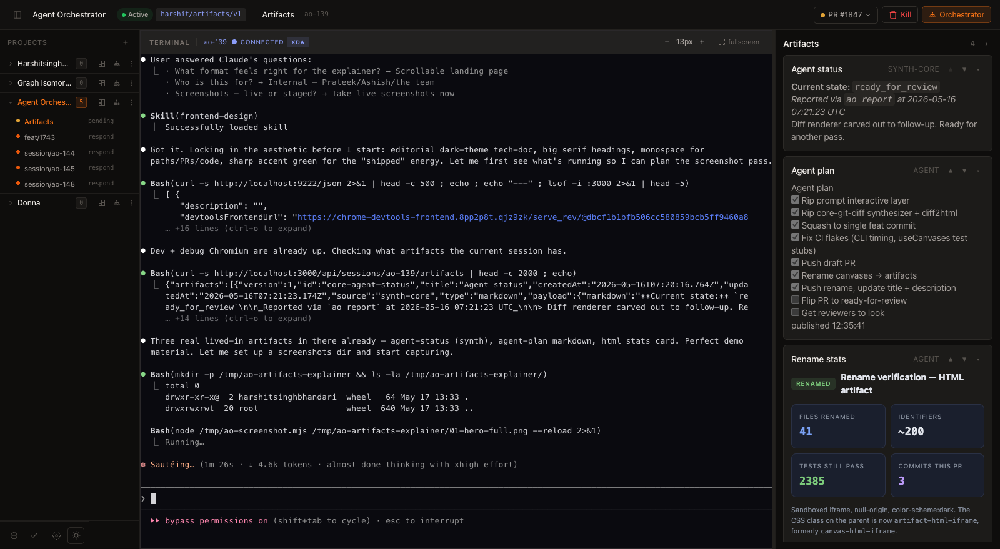
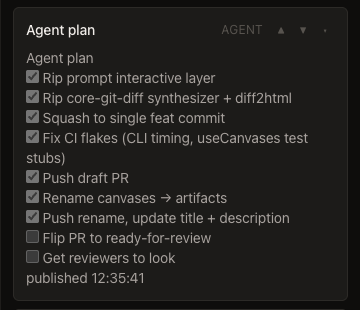
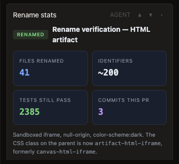
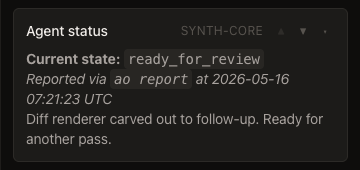
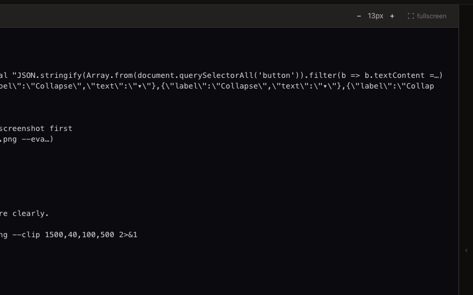
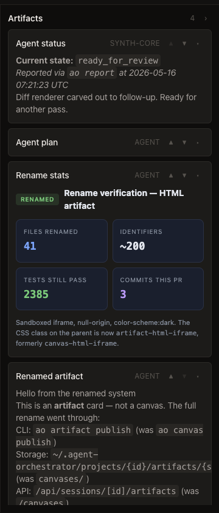

A right-rail that catches everything an agent wants you to see —
its plan, its current status, build summaries, link trackers, anything it
pipes through ao artifact publish — and turns them into
durable, addressable cards next to the terminal.
42
Unit tests added
4 427
Lines of code, +
49
Files touched
2
Renderer types

▶
Session ao-139: terminal at left, artifact rail at right.
Four lived-in cards — auto-rendered agent status, the agent's own checklist,
an HTML stats card, and a markdown card naming the rename.
§ 01Premise / why this exists
The terminal is a river. The rail is a shelf.
Origin
Started as a riff on Ashish's PR #1653 review notes. Took Prateek's
"keep it light + extensible" guidance as a hard constraint —
shipped only two card types this round.
Agents emit a constant stream of structured signals: plans, status reports,
diff summaries, link trackers, dry-run output. Until now those signals
only existed as ephemeral terminal scrollback — fine in the moment,
useless ten lines later.
The artifact rail catches them. Each signal becomes a card with an id, a
title, a source, a timestamp, and a renderer. The card lives in
~/.agent-orchestrator/projects/<id>/artifacts/<session>/
— workspace-adjacent, never inside the worktree, never in a git operation.
Two renderers in v1: markdown (sanitized, Marked-rendered)
and html (sandboxed iframe, null-origin, no
allow-same-origin). One synth-core card writes itself:
whenever you run ao acknowledge or ao report,
the latest state plus the last twenty entries materialize as a
markdown artifact called core-agent-status.
§ 02Three card types, one rail
Two renderers, one synthesizer.
Agents publish via the CLI. AO synthesizes one card on its own. Both flow
through the same ingest pipeline, validate against the same Zod schema,
and land in the same canonical store.
A Markdown · agent-published
The agent's own checklist.
Agents pipe markdown through ao artifact publish --type markdown.
AO sanitizes it (no raw HTML, no scripts, no images that hit the network),
Marked renders it, and the rail shows checkboxes as real checkboxes.
Capped at 64k chars.

A
Source pill reads AGENT. Reorder ▲▼ and collapse ▾ are
per-card, persisted to localStorage by id.
B HTML · agent-published
Full layout, sandboxed.
For richer cards — stat grids, side-by-side diffs, branded summaries —
agents publish HTML. AO embeds it in an iframe with
sandbox="allow-scripts" only: null origin, no parent access,
no network, no storage. Capped at 200k chars.

B
Iframe declares color-scheme: dark so the chrome doesn't
flash white. Height is postMessage-driven from inside.
C Markdown · synth-core
The card that writes itself.
Every time you run ao acknowledge or ao report <state>,
AO reads the audit trail, renders the latest state plus the last twenty
entries, and writes it as the reserved id core-agent-status.
Agents can't overwrite it — the core-* prefix is rejected at ingest.

C
Source pill reads SYNTH-CORE. Best-effort writer — if the
synthesizer throws, ao report still succeeds.
§ 03Interactions / get out of the way
You drive the shelf, not us.
State surfaceao-artifact-rail-collapsed · global ao-artifact-collapsed · global map by artifact id ao-artifact-order:<session> · per session
Three controls, all persistent across reloads, all localStorage. No
server-side state, no preferences API, no migration. The rail's job is
to be predictable when you come back to it tomorrow.
Whole-rail collapse — when the terminal is the focus and
the cards are noise, click the › in the rail header. A
24px strip stays at the right edge so the rail is always one click away.
Drag-resize the rail width with the splitter — that persists too.
Per-card collapse — long markdown gets noisy. The
▾ button on any card hides the body while keeping the header
+ source + reorder visible. Per-artifact state, so collapsing the agent
plan once stays collapsed across the session.
Reorder — ▲ and ▼ move a card
one slot up or down. The order is per-session and merges with the
default updatedAt sort: ids you've placed come first in your
order, everything else flows underneath, newest first. Stale ids (cards
that got evicted) silently drop out.

▶
Whole-rail collapsed. Terminal claims the full width. A 24px strip
with a ‹ handle remains at the right edge.

▶
Agent plan card collapsed mid-rail. Header, source pill, and the
▲▼▸ controls remain; body hides. Other cards untouched.
Keep it light. Extensible later. Two renderers, no synthesizers we'll regret.
— design constraint, paraphrased from Prateek's review of #1653
§ 04How agents publish
One CLI verb. One pipeline. No surprises.
Agents publish artifacts the same way they do everything else in AO — through
the ao CLI, run from inside the workspace they're attached to.
The session id is inferred from $AO_SESSION_ID.
SHELL# A markdown card from a file$ ao artifact publish --id agent-plan --title"Agent plan"--type markdown < plan.md
# An HTML card from stdin$ cat summary.html | ao artifact publish --id build-summary --type html
# Inline updates use the same command — id is stable, body is replaced.
Behind the verb is a staged-file pipeline. The CLI writes a JSON blob to a
.staging/ directory on the canonical artifact path. A chokidar
watcher running inside the dashboard server picks it up, validates against the
Zod schema, stamps server-owned metadata (createdAt,
updatedAt, source), and atomically renames the
file into place. The Mux WebSocket then broadcasts the new artifact to every
open dashboard subscribed to that session.
The synth-core card takes a side door: writeAgentStatusArtifact()
writes directly to the canonical store (no staging round-trip) after
applyAgentReport. The watcher still notices the canonical write
and broadcasts it — so the rail updates the same way regardless of source.
§ 05Constraints / non-goals
What this isn't.
Light v1 means we drew sharp lines around scope and held them. The list
below is the contract for what comes later.
scopeTwo renderers only — markdown and html. No prompt card. No diff renderer. No canvas synthesizer.
storageWorkspace-adjacent, never inside the worktree. ~/.agent-orchestrator/projects/<id>/artifacts/<session>/
caps256 KB per artifact · 64k chars markdown · 200k chars html · 32 cards per session (LRU on updatedAt).
reservedcore-* ids are rejected at ingest. Synth-core writes there directly; agents cannot.
sandboxHTML cards: sandbox="allow-scripts", null origin, no allow-same-origin, no top-frame access.
no-depsZero new UI libraries (CLAUDE.md C-01). Marked + dompurify already in the tree; everything else is hand-rolled CSS.
no-server-stateCollapse, reorder, rail width — all localStorage. No prefs API, no migration story to maintain.
best-effortSynth-core writes are wrapped: if the synthesizer throws, ao report still succeeds. Never on the critical path.